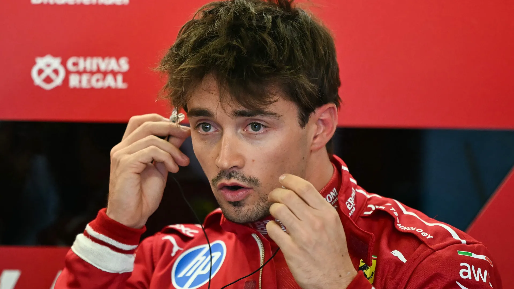
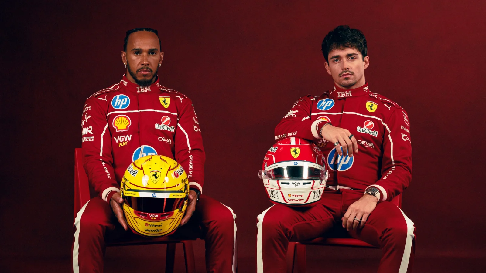

Biography
The Road to Greatness
From the karting tracks of the Côte d'Azur to the hallowed pitlane at Maranello — every chapter of Charles Leclerc's story was written in speed, loss, and defiance.


The Early Spark
Born in Monte Carlo on October 16, 1997, Charles grew up in the shadow of the Monaco Grand Prix barriers. Mentored by the late Jules Bianchi — his godfather, hero, and guardian angel — young Leclerc dominated European karting circuits alongside future rival Max Verstappen. The fire was lit early. Tragedy would only sharpen it: the loss of Jules in 2015, and his father Hervé in 2017, forged an unbreakable will to race not just for himself — but for them.


Dominating the Ladder
A masterclass ascent through the junior formulae. GP3 Series Champion in 2016, followed by a devastating Formula 2 Championship campaign in 2017 — seven victories, relentless pace, zero doubt. The Ferrari Driver Academy's prize asset graduated with honours. Maranello was watching. The phone rang.


The Dream & The Struggle
A debut season at Sauber turned every head in the paddock. Ferrari called — and Leclerc delivered immediately. The legendary 2019 Monza victory saw 100,000 tifosi erupt as the 21-year-old conquered the Temple of Speed. But the years that followed tested him: unreliable machinery, strategic errors, near-misses. Through it all, he never stopped pushing. The struggle only deepened his legend.

.webp)
The Superteam Era
History arrives at Maranello. Lewis Hamilton — seven-time World Champion — joins Leclerc to form the most formidable driver pairing in a generation. The SF26 is Ferrari's boldest technical statement in years: new aerodynamic regulations, refined power, and the collective hunger of a team that has waited too long. The championship drought must end. Two lions share one cage.


.jpg)
.jpg)
.jpg)